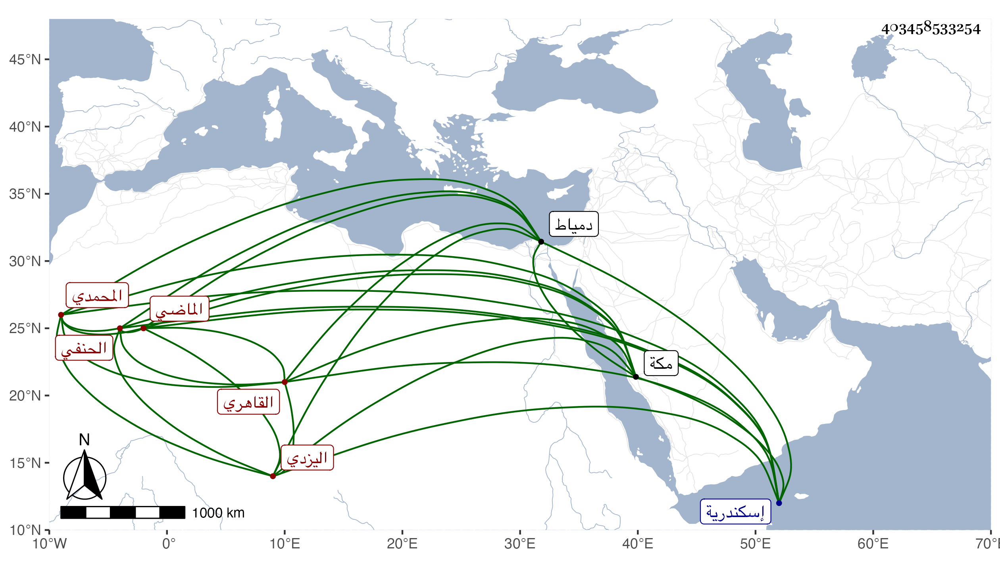

0902Sakhawi.DawLamic.ITO20230111-ara1.EIS1600.403458533254
Biography ID: 403458533254
875
علي بن علي بن أحمد بن سعيد بن هرون العلاء بن العلاء المحمدي اليزدي الأصل ثم القاهري الحنفي الماضي أبوه ويعرف بالتزمنتي . ولد في يوم الجمعة سابع ربيع الأول سنة ثمان وثمانمائة بخط الريدانية بالقرب من جامع آل مالك والإسماعيلية من الحسينية ، ونشأ بها فقرأ القرآن عند السراج عمر الحكري ثم نور الدين النشرتي جد صاحبنا شمس الدين وفي القدوري عند ناصر الدين بن مهنا وتردد للتفهني ثم العيني وابن الديري والعز عبد السلام البغدادي وسمع على شيخنا ، وحج مع أبيه عند بلوغه ثم بعده في أيام الظاهر خشقدم ، ودخل إسكندرية ودمياط وغيرهما وقرر حاجبا في أيام الأشرف برسباي فلامه بعض أصحابه فسعى حتى صرف في يومه وداخل غير واحد من الأمراء والمباشرين بل واختص بخطيب مكة أبي الفضل وبأمير المؤمنين المتوكل على الله قبل الخلافة وبعدها وربما جاءه إلى منزله مع كثرة مطلوبه هو إليه وكثرة تردده إلي وإقباله علي وذاكر بكثير من أحوال الدولة مع تودد وفتوة وكان يقال له كأبيه شيخ المشايخ ثم لا زال أمره في انحطاط وتجرع فاقة ولزم محله .
